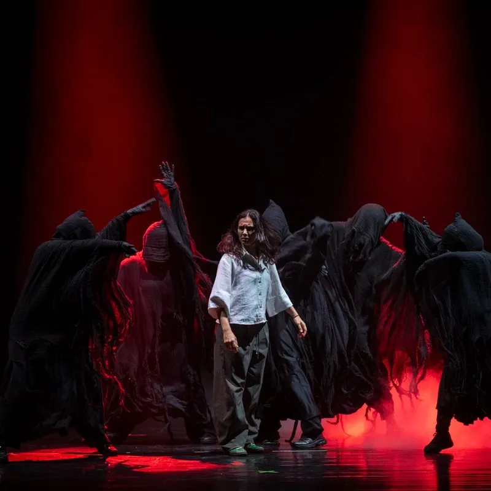
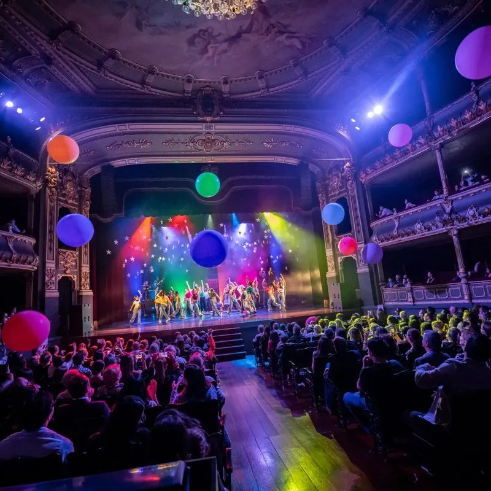
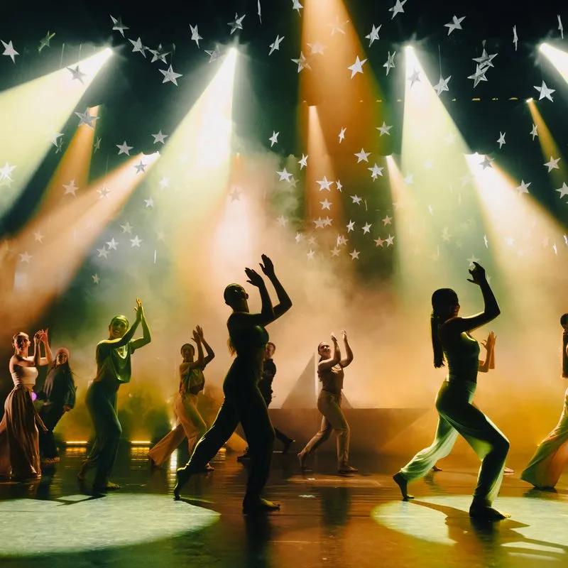
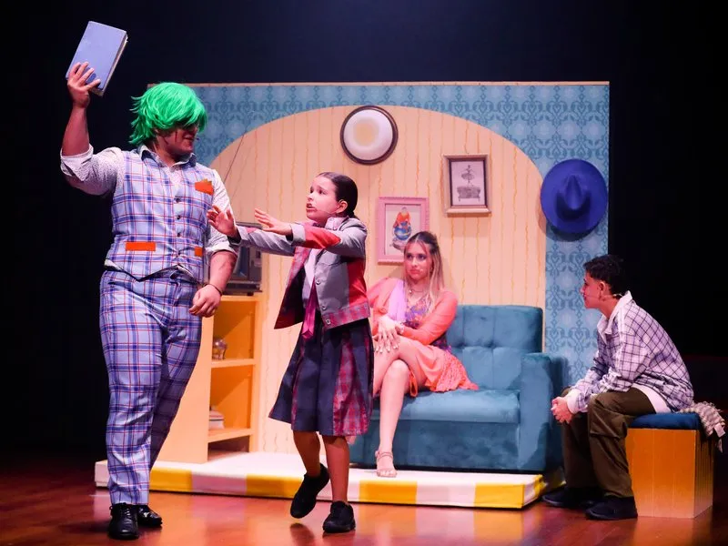
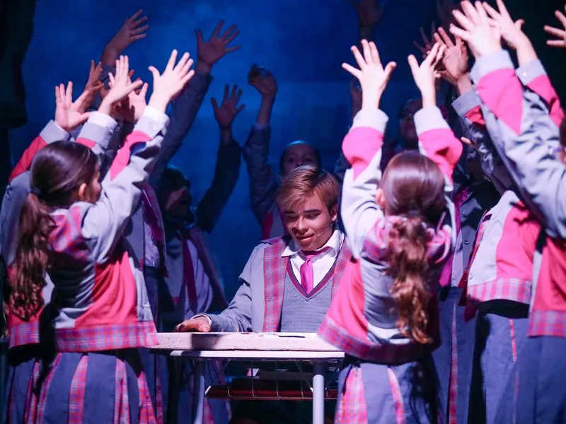
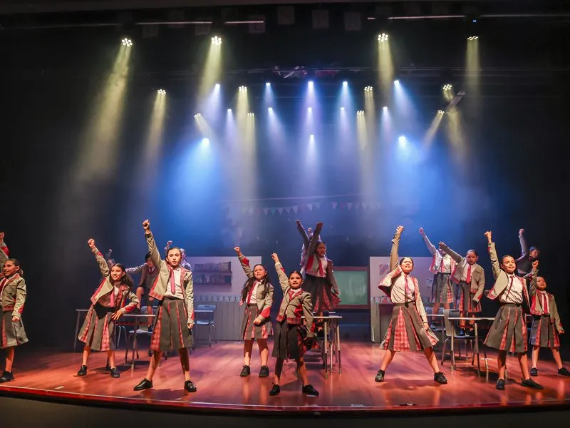
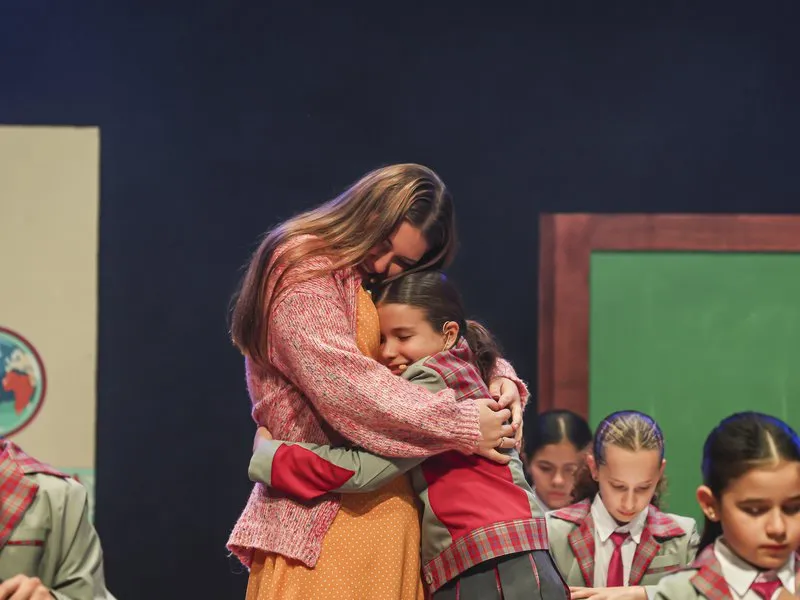

Still Standing
- Year
- 2026
- Role
- Co-director & lead vocals
- About
- A stage production by Andamio Escuela de Movimiento.
- Links
- andamiocr.com/stillstanding




Performing arts
Stage and artistic direction: immersive shows, musicals and theatre.








